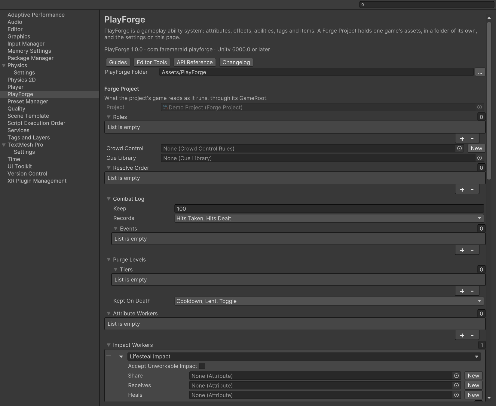

Project Settings → PlayForge
Project Settings → PlayForge holds the settings a project shares: the PlayForge Folder, and the active Forge Project's settings.

Project Settings → PlayForge.
About this PlayForge
The page opens with which PlayForge this is: its version, package name and the Unity it needs, as its package.json
says. A row of links follows. Each site link's tooltip is its address.
| Link | Opens |
|---|---|
| Guides | The documentation site. |
| Editor Tools | This guide. |
| API Reference | The API reference. |
| Changelog | The package's CHANGELOG.md. |
The folder setting
The PlayForge Folder is the Unity project's own setting, kept in ProjectSettings/PlayForge.asset.
| Property | Description |
|---|---|
| PlayForge Folder | Where a new Forge Project goes, each in a folder of its own, and the Bootstrap prefabs. It's Assets/PlayForge to start. … picks a folder in Assets. |
The active project's settings
The rest of the page is the active Forge Project's, kept in its asset, so each game has its own. Each edit is saved in the project's asset, and Undo takes it back.
With no project active, the page says so. Choose one in The Forge. While the Unity project has none, Create Forge Project makes one named for the game.
Forge Project
Forge Project holds what the project's game reads as it runs, through its GameRoot.
| Property | Description |
|---|---|
| Roles | The attribute playing each role, by its tag (Attributes: Roles). |
| Crowd Control | The rules an entity follows where it names none (Abilities: Requirements: Crowd Control). |
| Cue Library | The project's Cue Library (Cues: Routes). |
| Resolve Order | The order an area's effects land on those it takes, by the tags they carry (Effects: Workers: Resolve Order). |
| Combat Log | What each entity's combat log writes, and how many entries it keeps (Entities: Combat Log). |
| Purge Levels | The tiers a purge reaches, and what a death keeps (Effects: Purging). |
| Workers | Every entity's workers (Workers: Where workers come from). |
Fill Roles by Name gives each of PlayForge's roles no attribute plays the project's attribute of that name, as one Undo step. The roles are Health, Luck and Movement Speed, and Movement Speed takes Move Speed too.
New Assets
New Assets sets each type's folder within the project's folder. The Forge and a field's New put the type's new assets there.
| Control | What it does |
|---|---|
| A type's folder | Where its new assets go. … picks one inside the project's folder. |
| Use Default Folders | Puts each folder back to its default. |
Defaults
Defaults sets two things for each type.
| Property | Description |
|---|---|
| New Asset | The asset a new asset of the type starts as a copy of. |
| Import | The assets the Import window lists first. |
Cost and Cooldown
Cost and Cooldown names the project's Cost and Cooldown effects.
| Property | Description |
|---|---|
| Cost Effect | The effect an ability's Cost field offers to copy or use, and an Active item copies. |
| Cooldown Effect | The effect an ability's Cooldown field offers to copy or use, and an Active item copies. |
The Templates list
The page's last group, Templates, lists the project's own templates.
| Property | Description |
|---|---|
| Templates | The project's own assets that Create offers to start a new asset as a copy of. |
Project settings in code
PlayForgeSettings reads and writes the project's authoring settings.
| Member | Description |
|---|---|
FolderFor(type) |
The folder a new asset of the type goes in. |
NewAssetDefault(type) |
The asset a new asset of the type starts as a copy of. |
ImportDefaults(type) |
The assets Import lists first for the type. |
UsageEffect(key), SetUsageEffect(key, effect) |
Get or set the Cost or Cooldown effect, by "Cost" or "Cooldown". |
SetNewAssets |
Sets where a type's new assets go. |
SetDefaults |
Sets a type's defaults. |
UseDefaultFolders() |
Puts every type's folder back to its default. |
DefaultFolder(type) |
The folder a type's new assets go in until a setting says otherwise. |
UseProject(project) |
Reads another project's settings in place of the active one's, and gives back the one it replaced. |
EffectTemplateRegistry gets and sets the Cost and Cooldown effects by their keys, "Cost" and "Cooldown". The settings
themselves are the project's ForgeProjectSettings, and the authoring ones its ForgeAuthoringSettings.